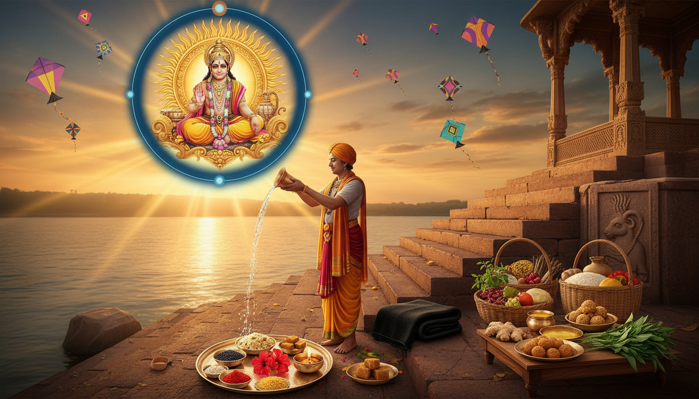

भारतीय संस्कृति और सनातन धर्म में मकर संक्रांति केवल एक पर्व नहीं, बल्कि खगोलीय परिवर्तन और आध्यात्मिक चेतना के पुनर्जागरण का प्रतीक है। जब प्रत्यक्ष देवता सूर्य देव धनु राशि की अपनी यात्रा पूर्ण कर अपने पुत्र शनि की राशि 'मकर' में प्रवेश करते हैं, तो यह संक्रमण काल 'मकर संक्रांति' के रूप में संपूर्ण भारतवर्ष में उल्लास के साथ मनाया जाता है।

ज्योतिषीय दृष्टिकोण से यह समय 'खर मास' (धनु संक्रांति) की समाप्ति और शुभ कार्यों के पुनः प्रारंभ होने का सूचक है। मकर राशि एक 'चर राशि' (Movable Sign) है, जो परिवर्तन और गतिशीलता का प्रतिनिधित्व करती है। अतः यह समय नवीन परियोजनाओं के आरंभ और जीवन में सकारात्मक ऊर्जा के संचार के लिए अत्यंत श्रेष्ठ माना गया है। यह पर्व हमें अंधकार से प्रकाश की ओर ले जाने वाला एक आध्यात्मिक द्वार है।
2027 मकर संक्रांति: तिथि और शुभ मुहूर्त
वर्ष 2027 में मकर संक्रांति का पावन पर्व 14 जनवरी, गुरुवार को मनाया जाएगा। इस वर्ष गुरुवार का दिन होने के कारण इस संक्रांति का धार्मिक महत्व और अधिक बढ़ गया है। पुण्य काल में किया गया स्नान और दान अक्षय फल प्रदान करता है।
| विवरण | समय / तिथि |
|---|---|
| दिनांक | 14 जनवरी 2027 (गुरुवार) |
| संक्रांति क्षण (Moment) | 09:44 AM |
| पुण्य काल मुहूर्त | 09:44 AM से 05:55 PM |
| महा पुण्य काल मुहूर्त | 09:44 AM से 11:37 AM |
2027 संक्रांति पुरुष विवरण (Sankranti Phalam)
शास्त्रों के अनुसार, प्रत्येक वर्ष संक्रांति एक विशिष्ट स्वरूप में आती है। वर्ष 2027 के लिए विवरण निम्नलिखित हैं:
- संक्रांति नाम: मंदा (Manda)
- वाहन: हाथी (Elephant) - यह समृद्धि और ऐश्वर्य का प्रतीक है।
- वस्त्र: लाल (Red)
- कंचुकी (ऊपरी वस्त्र): गुलाबी (Pink)
- करण: गरज़ (Garaja)
आध्यात्मिक एवं पौराणिक महत्व
मकर संक्रांति का महत्व हमारे पुराणों और महाकाव्यों में विस्तृत रूप से वर्णित है:
- उत्तरायण का प्रारंभ: इस दिन से सूर्य की उत्तर दिशा की यात्रा शुरू होती है। शास्त्रों में उत्तरायण को 'देवताओं का दिन' कहा गया है, जिसमें सात्विक ऊर्जा का प्रवाह तीव्र होता है।
- भीष्म पितामह का प्रसंग: महाभारत के महान योद्धा भीष्म पितामह ने स्वेच्छा से अपने प्राण त्यागने के लिए उत्तरायण की प्रतीक्षा की थी। मान्यता है कि इस काल में शरीर त्यागने से आत्मा को जन्म-मरण के चक्र से मुक्ति और मोक्ष प्राप्त होता है।
- श्रीमद्भगवद्गीता का संदर्भ: गीता के 8वें अध्याय (अक्षर ब्रह्म योग) में भगवान श्रीकृष्ण ने उत्तरायण मार्ग को 'ब्रह्म मार्ग' बताया है, जो साधक को परम गति की ओर ले जाता है।
- विष्णु पुराण का मत: विष्णु पुराण में इसे "अत्यंत पुण्यवर्धक" दिवस कहा गया है। इस दिन किया गया जप और तप कई गुना फलदायी होता है।
ज्योतिषीय विश्लेषण: सूर्य और शनि का संबंध
मकर संक्रांति सूर्य (आत्मा और अधिकार के कारक) और शनि (अनुशासन और कर्म के स्वामी) के मिलन का पर्व है।
- शत्रु राशि और संघर्ष: सूर्य अपने शत्रु शनि की राशि में प्रवेश करते हैं। यह 'घर्षण' हमें सिखाता है कि अधिकार प्राप्त करने के लिए अनुशासन और कड़े संघर्ष की आवश्यकता होती है। चूंकि मकर एक चर राशि (Movable Sign) है, इसलिए यह समय जड़ता को त्यागकर कर्मठ बनने का संदेश देता है।
- तिल-गुड़ का रहस्य: ज्योतिष में तिल शनि का और गुड़ सूर्य का प्रतीक है। इन दोनों का सम्मिश्रण यह सीख देता है कि जीवन में सफलता के लिए हमें अपने अहंकार (सूर्य) को त्यागकर व्यवहार में मधुरता (गुड़) लानी चाहिए।
संपूर्ण पूजा विधि और अनुष्ठान
मकर संक्रांति पर सूर्य उपासना के लिए निम्नलिखित चरणों का पालन करें:
- ब्रह्म मुहूर्त स्नान: सूर्योदय से पूर्व जल में काले तिल और गंगाजल मिलाकर स्नान करें।
- सूर्य अर्घ्य और परिक्रमा: तांबे के लोटे में जल, तिल, रोली और अक्षत लें। "ॐ आदित्याय नमः" मंत्र के साथ अर्घ्य दें। अर्घ्य देते समय सूर्य देव की तीन बार परिक्रमा (3 Revolutions) अवश्य करें, जो उनके सौर मंडल के चक्र का प्रतीक है।
- वस्त्र चयन: इस वर्ष संक्रांति पुरुष के अनुसार, लाल या गुलाबी वस्त्र धारण करना शुभ माना गया है।
- दीप दान: शनि देव की पीड़ा से मुक्ति के लिए सायंकाल में तिल के तेल का दीपक जलाएं।
- नैवेद्य: सूर्य देव को तिल के लड्डू और खिचड़ी का भोग लगाएं।
दान का महात्म्य: क्या दान करें?
इस दिन किया गया दान 'अक्षय' होता है। यहाँ मुख्य दान योग्य वस्तुएं दी गई हैं:
- खिचड़ी और अन्न: इसे 'महादान' कहा गया है। यह जीवन में स्थिरता और संपन्नता लाता है।
- काले तिल और गुड़: काले तिल भगवान विष्णु का स्वरूप माने जाते हैं, जो पापों का नाश करते हैं। गुड़ सौभाग्य और मिठास का प्रतीक है।
- गर्म कपड़े और काले कंबल: शीत ऋतु में जरूरतमंदों को काले कंबल का दान करने से शनि दोष की शांति होती है और जीवन के अवरोध दूर होते हैं।
- दक्षिणा: शास्त्रानुसार, बिना दक्षिणा के दान अपूर्ण रहता है। अतः अपनी सामर्थ्य अनुसार कुछ नकद राशि दान के साथ अवश्य रखें।
भारत के विभिन्न क्षेत्रों में उत्सव
| राज्य | उत्सव का नाम | मुख्य परंपरा / विशेषता |
|---|---|---|
| उत्तर प्रदेश | खिचड़ी पर्व | पवित्र नदियों में स्नान और खिचड़ी का महादान |
| तमिलनाडु | पोंगल | नई फसल का नैवेद्य और सूर्य देव का आभार |
| गुजरात | उत्तरायण | आकाश में रंग-बिरंगी पतंगों का उल्लास (पतंगबाजी) |
| पंजाब | माघी | लोहड़ी के अगले दिन पवित्र स्नान और दान |
| असम | माघ बिहु | मेजी जलाना और सामुदायिक भोज |
सावधानियां (वर्जनाएं)
इस पवित्र दिवस की सात्विकता बनाए रखने के लिए इन बातों का ध्यान रखें:
- वृक्षों अथवा पौधों की कटाई न करें।
- मुख से अपशब्द या कठोर वाणी का प्रयोग न करें।
- स्नान और अर्घ्य से पूर्व अन्न ग्रहण न करें।
- भोजन का अपमान न करें और द्वार पर आए याचक को रिक्त हाथ न भेजें।
निष्कर्ष एवं मुख्य टेकअवे (Takeaways)
मकर संक्रांति वास्तव में हमारे "प्रारब्ध का शुद्धिकरण" (Purification of Destiny) करने का अवसर है। यह दिन हमें सिखाता है कि प्रकृति के साथ तालमेल बिठाकर ही हम उन्नति कर सकते हैं।
- आध्यात्मिक नव-आरंभ: सूर्य की उत्तर दिशा की यात्रा के साथ अपने विचारों को भी उच्च और सकारात्मक दिशा दें।
- कर्म और अनुशासन: मकर की 'चर' प्रकृति का लाभ उठाते हुए रुके हुए कार्यों को अनुशासन के साथ पुनः प्रारंभ करें।
- सेवा ही साधना: निस्वार्थ भाव से किया गया दान और सेवा ही सूर्य देव की सच्ची आराधना है।
आप सभी को मकर संक्रांति 2027 की हार्दिक शुभकामनाएं! सूर्य देव आपके जीवन को स्वास्थ्य और तेज से आलोकित करें।
Sources
- Makar Sankranti 2027 – A Day of Karmic Reset & Divine Alignment ...
- Makar Sankranti 2027 Date, Time, and Importance - Anytime Astro
- Makar Sankranti 2027 — Date, Muhurat, Significance & Rituals ...
- Makar Sankranti 2027 - Divine Sansar UAE
- 2027 Makar Sankranti, Pongal Date and Time for San Francisco El Alto, Totonicapan, Guatemala - Drik Panchang
- Makar Sankranti Pooja Vidhi: Step-by-Step Rituals Aligned with 2026 Planetary Transits
- Makar Sankranti - When the King Walks Among Common People - Consult Lunar Astro
- Sun in Capricorn: Vedic Astrology — Effects & Remedies | AstroSight
- Sun (Surya) in Capricorn: Discipline, Ambition, Career & All 12 Ascendants (Vedic + KP)
- Makar Sankranti 2026: When & Why it is Celebrated
- Makar Sankranti - Wikipedia
- Winter Ritucharya Guide: Ayurvedic Routine with Kbir Wellness
- Foods Recommended By Ayurveda For Winter Season
- Ritucharya in Winter- An Ayurvedic Seasonal Guidelines
- Ayurveda For Winter: Daily Rituals & Recipes For Balance - Arhanta Yoga Ashrams
- Shishir Ritucharya (Diet & Regimen in Shishir Ritu-Late winter)|Dr ...
- Aditya Hridayam Stotram: The Ancient Sun Prayer That Can Transform You - Crystall and Herbs
- Did you know chanting Aditya Hridaya Stotra can enhance your self confidence?
- Aditya Hridaya Homam for Makar Sankranti Special - Shastrigal.net
- Saturn's transit to Capricorn: What does it mean for you? Find out! | The Art of Living India
- Makar Sankranti (Pongal) 2027 Date - 14 Jan 2027 | BDA
- Tamil Calendar 2027 - தமிழ் நாட்காட்டி 2027 PDF Free Download
- Makar Sankranti 2027 Date 14 or 15 January? | Prabhava Nama Samvatsara - YouTube
- Makar Sankranti 2026 date: Is it 14 or 15 January? Check shubh muhurat, punya kaal and puja timings
- Makar Sankranti 2026 — Date, Punya Kaal & Rituals | AstroSight
- Makar Sankranti 2026: Date, Punya Kaal, and Rituals | Astropatri.com
- Pandit for Surya Shani Shapit Dosha Puja: Cost, Vidhi & Benefits - 99Pandit
- Surya Shani Dosh Puja - PavitraJyotish
- Know Makar Sankranti, Its Importance, And Benefit - Astrologer Umesh
- Makar Sankranti 2024: Effect of Sun Transit in Capricorn On You - Vedic Rishi
- Shani Dosha Remedies for Each Star Sign: Finding Balance in Astrology
- Benefits of Aditya Hrudayam - Trivia on Spirituality
- Aditya Hridayam - The Heart of Aditya, the Sun God
- Makar Sakranti and The Power of Aditya Hridaya Stotra : r/Tantra - Reddit
- Ritucharya in Ayurveda | Ayurvedic Seasonal Regimen by Dabur
- Ritucharya: Seasonal Schedule - Ayurveda Kendra
- What Are the Seasons of Ayurveda? Ritucharya Explained - Online Yoga School
- Ritucharya - Dr. Kelkar Ayurvedic Clinic, Panchakarmas Center
- Ritucharya: A Seasonal Routine to Support Your Gut Microbiome - Maharishi Ayurveda
- Mithuna Sankranti 2026: Date, Punya Kaal, Significance, Donations & Spiritual Benefits
- Aditya Hridaya Stotra: Meaning, Benefits, and Chanting Guide | Sanatan Hindu
- Full List of Bank Holidays in January 2026 - The Times of India
- Makara Sankranti in 2027 - Calendar Labs
- Makar Sankranti 2026: Shubh Muhurat, Date, Time And Rituals - YouTube
- Makar Sankranti 2027: Date, Tithi, Meaning & Calculation
- Vrishchika Sankranti 2027 Date - 17 Nov 2027 | BDA - Bharat Dharma Academy Limited
- 2027festivals - - YouTube
- Significance of Purna-Kalasha in Rituals | PDF - Scribd
- When is Lohri 2025? Date, History, Significance, Story and all you need to know
- Makar Sankranti 2027: Date, Rituals & How to Celebrate | Hindu Hub
- MAKAR SANKRANTI - January 15, 2027 - National Today
- How Many Months Until Makar Sankranti 2027?
- Makar Sankranti - Teaching Packs
- MULTI-FAITH CALENDAR (JULY 1 - JUNE 30) - University of Manitoba